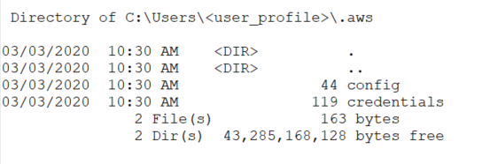
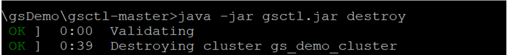

In addition to creating a cluster that is either onprem or in the cloud, it is also possible to create a hybrid cluster – a cluster that is provisioned in both environments.
In this topic, we will create a hybrid cluster that has both local onprem and AWS cloud components.
We will use the gsctl command, a simple CLI tool for creating
Before beginning to work with the gsctl tool, ensure that you have the following:
Java 8 or higher installed on your local workstation.
AWS account and appropriate credentials as described in the AWS Command Line Interface documentation.
To deploy a
aws_access_key_id and aws_secret_access_keyaws_regionIn addition, perform the following setup tasks:
Follow the steps in the procedure to create a
To create a cluster:
Verify that an .aws folder exists in the home directory on your local machine, and that it contains the config and credentials files. The credentials file should include your aws_access_key_id and aws_secret_access_key, and the config files should include your aws_region and output definitions.

Open a command window and type the following to define a cluster called gs_demo_cluster:
init --cluster-name=gs_demo_cluster -aws=1 -op=1This command also creates a cluster.yaml file, which you can modify to supply your AWS resources, such as VPC, keyName, and securityGroups values. If you edit any parameter in the AWS section, you must provide all the values for the section.
By default, the utility creates all the resources from the credentials and config files in the .aws folder.
Also modify the yaml file as follows:
keyName - name of your pem file (without the .pem extension)
userName - name of the on-premise machine being used to create the cluster
profiles - the on-premise worker (client) name, along with the IP addresses of the host machines
You must have 3 masters (gsManagers) and at least 1 worker.
aws:
keyName: null
vpcId: null
vpcSubnetId: null
securityGroup: null
amiId: null
userName: null
servers:
label: "GS Cluster [GS_CLUSTER] Server Group"
groups:
- type: "m4.xlarge"
tags: null
count: 3
clients:
label: "GS Cluster [GS_CLUSTER] Client Group"
groups:
- type: "m4.xlarge"
tags: null
count: 3
gsManagers: 3
name: "GS_CLUSTER"
onPremise:
keyName: "pem file"
userName: "user name"
masters:
label: "GS Cluster [gs_demo_cluster] Master Group"
profiles:
- name: "default on premise master name"
hosts:
- "127.0.1.93"
- "127.0.1.95"
- "127.0.1.96"
workers:
label: "GS Cluster [gs_demo_cluster] Worker Group"
profiles:
- name: "default on premise worker name"
hosts:
- "127.0.1.97"
- "127.0.1.98"
- "127.0.1.99"
name: "gs_demo_cluster"To create the omprem component of the cluster, and deploy the cloud component, run the following command:
createThe cloud platform begins to create the cluster:
You can monitor the progress of the cluster in your cloud platform dashboard, for example the VPC Dashboard in AWS:

The process of creating the cluster takes only a few minutes until the nodes are up and running. You can see when the Master (server) nodes and Worker (client) nodes are running and have passed the status checks.

